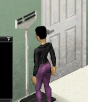

Le personnage monte sur la balance medicale, le releve apparait en haut a droite du centre de l'ecran, il redescend et le releve s'en va. Aucune interaction sauf un clic sur le releve, qui bascule entre kg et lb et s'en souvient. Deux directions ci dessous : la tete a fleau, en gros plan sur l'objet lui meme, et un repli en panneau natif. Les deux sont dessines avec les primitives de l'UI Lua de PZ : textures, une texture pivotee, rectangles. Les chiffres sortent des pages de police du jeu.
Gros plan sur la tete de fleau que le personnage a sous les yeux, dans les couleurs du sprite : email creme, fleau noir, metal use. Le fleau bascule, le curseur glisse jusqu'a la valeur, le fleau revient a l'horizontale avec une oscillation amortie. Les zones de trait sont peintes sur la graduation, aux vrais seuils, sur la meme fonction de projection que le curseur.
1-(1-t)^3,
bascule 1-(1-t)^2, glissement
t<0.5 ? 4t^3 : 1-(-2t+2)^3/2, disparition t^2.x = 30 + (w - 35) / 95 * 218; la planche de controle le verifie au
pixel. Bande active a pleine opacite et 4 px plus haute, les autres a 40 %.Panneau sombre translucide dans le vocabulaire de l'UI de PZ : fond noir a 74 %, filet blanc a 34 %, un liseré de 3 px a la couleur de la bande. Le chiffre et son unite, rien d'autre. Meme moteur d'animation : le panneau apparait, le chiffre monte avec le curseur invisible, puis se fige.
rgba(0,0,0,0.74), filet rgba(255,255,255,0.34),
liseré de bande 3 x 52 px a gauche.Retenir la tete a fleau. C'est la seule des deux qui repond a la demande de depart : le joueur monte sur l'objet et lit l'objet, pas un widget pose par dessus. Le fleau qui bascule puis se stabilise porte a lui seul l'information "la mesure se fait, puis elle est faite", sans un mot de texte, et la position du curseur donne la bande de trait au premier coup d'oeil, avant meme que le chiffre soit lu.
Garder le panneau natif comme repli pour le cas ou les textures ne chargent pas, et comme option si le proprietaire trouve la tete a fleau trop presente a l'ecran. Il coute trois rectangles et un dessin de chiffre.
Le poids bouge d'environ un dixieme de kilo en quelques heures de jeu : le releve n'a donc rien a animer en continu. Il ne bouge qu'a la montee et a la descente, ce que les deux directions respectent.

Capture du proprietaire, agrandie. Colonne d'email creme, tete a fleau en haut,
plateau noir au sol, le personnage se tient dessus face a la tete. Aucun cadran sur
cet objet : la direction cadran de la v1 est abandonnee. Les couleurs de la maquette
sont prises la dessus : email #e2dbc8 vers #bcb4a0,
fleau #2c2c30 vers #121214, metal use
#a6a08e.